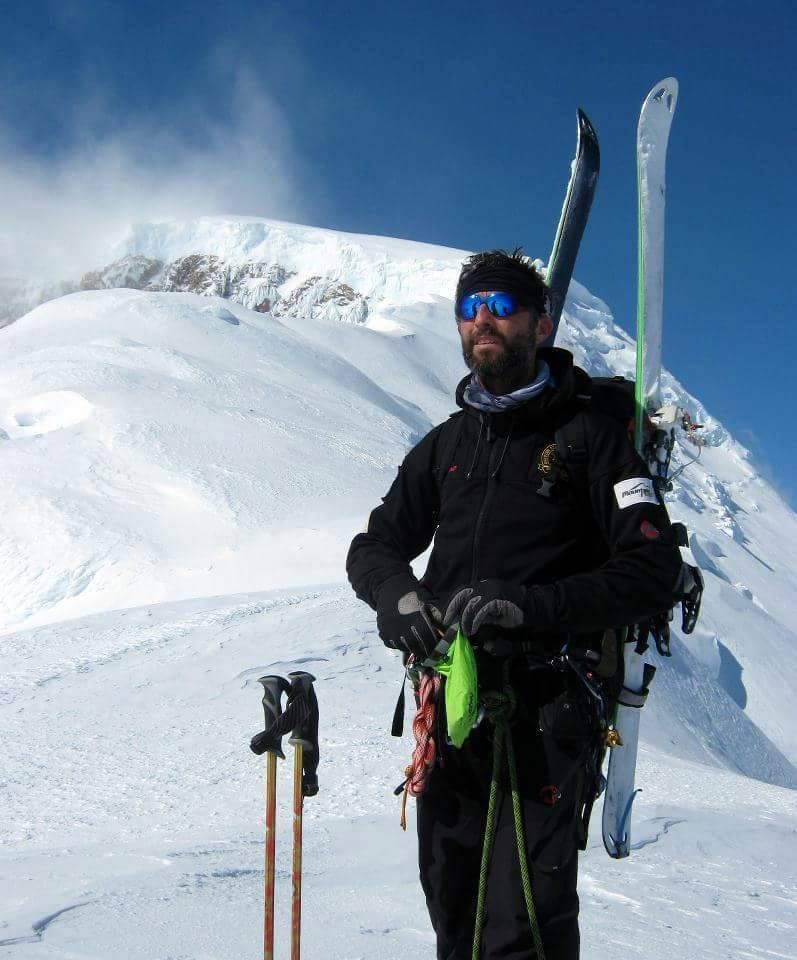

Richard Simpson (SSgt Army)
Richard Simpson joined the Army in 1994 as a Radio Telegraphist in the Royal Corps of Signals. Over a 26-year career he has served in Northern Ireland, the Balkans and the Middle East. He has received Arctic, desert and jungle warfare training, excelling at Arctic training he became a Military Arctic Ski Survival Instructor which gave him an excellent foundation for his passion for outdoor pursuits.
He has been an active mountaineer for 20 years and has built an impressive adventurous training profile and reputation. He was selected as telecommunications leader on a UK pioneering Himalayan expedition where his life saving efforts earned him a General’s Commendation for Meritorious Service. He then led trekking and ski mountaineering expeditions around the world.
Building experience from that he was then selected for the British Services Antarctic Expedition 2012 carrying out exploratory mountaineering, gaining a number of British mountaineering first ascents and again, received another commendation for Outstanding Military Service.
He now works in a Military outdoor pursuits centre in Pembrokeshire, passing on his experience to new instructors and students. He delivers trekking, mountain biking and skiing courses for the wider British Services.
He is an active mountain biker and ultra-runner and has several fastest known times most notably the first person to run the entire Pembrokeshire Coast Path (186 miles) in under 3 days.
He lives with his two children Bramwell and Erica in Pembrokeshire.
